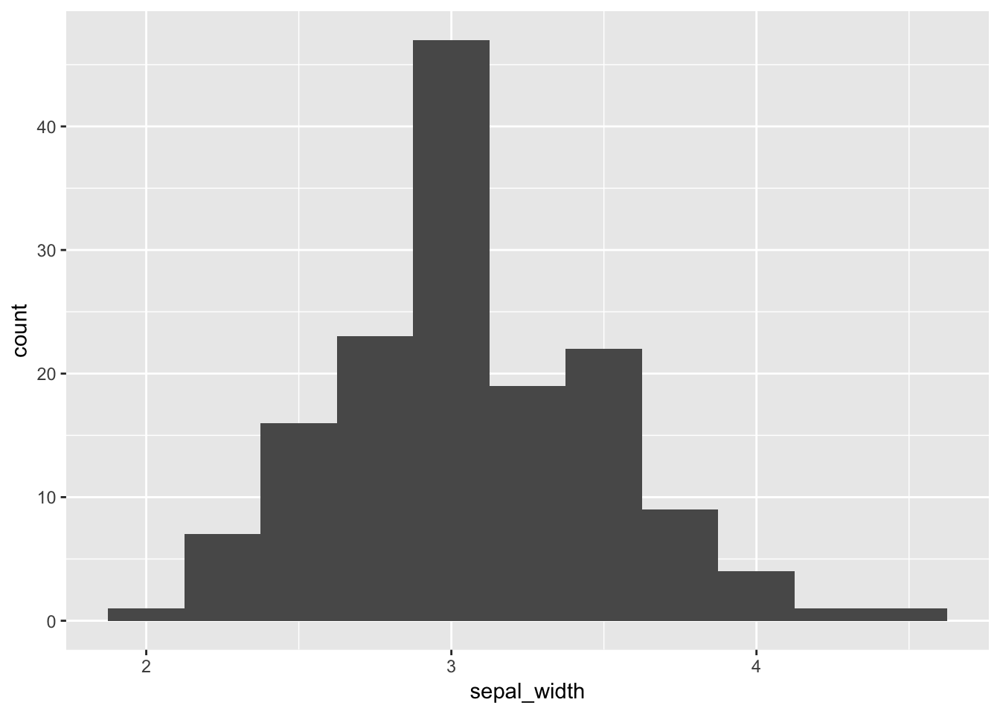

So the pattern of this set of code so far has been how to look at the data visually and how it looks and to see outliers. The next goal is to be able to clean the data or remove, reoranize or reformat the data and add new transformed varaibles.
We will read in the main files and load the libraries as we have worked with so far.
# One new package for summary stats
#install.packages("psych")
# load the libraries each time you restart R
library(tidyverse)
library(lubridate)
library(scales)
library(skimr)
library(janitor)
library(patchwork)
# read in the file
iris.df <- read_csv("data/iris.csv")
glimpse(iris.df)## Observations: 150
## Variables: 5
## $ Sepal.Length <dbl> 5.1, NA, 4.7, 4.6, 5.0, 5.4, 4.6, 5.0, 4.4, 4.9, ...
## $ Sepal.Width <dbl> 3.5, 3.0, 3.2, 3.1, 3.6, 3.9, 3.4, 3.4, 2.9, 3.1,...
## $ Petal.Length <dbl> 1.4, 1.4, 1.3, 1.5, 1.4, 1.7, 1.4, 1.5, 1.4, 1.5,...
## $ Petal.Width <dbl> 0.2, 0.2, 0.2, 0.2, 0.2, 0.4, 0.3, 0.2, 0.2, 0.1,...
## $ Species <chr> "setosa", "setosa", "setosa", "setosa", "setosa",...So lets finally use the janitor pacakge to clean up this data. This will make working with data sets from other users a bit easier to work with quickly rather than reformatting all the values manually.
Note that this will get rid of empty columns and rows if from an excel sheet and will clean up the variable names.
iris.df <- iris.df %>%
clean_names() %>%
remove_empty(c("rows", "cols")) So lets start thinking about how to string a lot of commands together. Before this we have assigned items to a name or environmental varaible with <- bu now what we want to do is sort of the opposite. We want to take an object or output of an object and pass it to the right to do new things with the output. We do this using the pipe command %>%. This takes what is on the left and passes it to the right.
Lets try this with a plot. What happens here is it takes the dataframe and then passes it to the ggplot commands. So the dataframe is removed from the ggplot commands. I will show you why in a second that this is really cool.
iris.df %>%
ggplot(aes(sepal_width)) +
geom_histogram(binwidth = 0.25)
What if you wanted to select only certain variables to work with? Now lets use two ways to do the same thing…..
petal_width.df <- select(iris.df, species, petal_width)You can do the same thing with the pipe command
petal_width.df <- iris.df %>% select(species, petal_width)Lets assume you wanted to select all petal variables you can use things like: starts_with(), ends_with(), contains(), everything() in various combinations such as
petal.df <- iris.df %>% select(species, species, starts_with("petal"))What if you wanted to work with only one species for each of the charactes. This will select only those individuals that are setosa. Note that in this you need = =.
setosa.df <- iris.df %>% filter(species=="setosa")
##Boolean search terms of interest
# create a simple table # should be a dataframe to make it with kable | Search | code |
|—————————|————-| | greater than | > | | greater than or equal to | >= |
| less than | < | | less than or equal to | <= | | is NA | is.na | | is not NA | !is.na | | is not equal to | != | | is not x | !x | | x | y | x OR y |
| x & y | x AND y |
petal_width_lessthan.df <- iris.df %>% filter(sepal_width < 3.5)petal_width_lessthanequal.df <- iris.df %>% filter(sepal_width <= 3.5)& or |petal_width_combined <- iris.df %>% filter(sepal_width > 2 & sepal_width < 3)iris.df %>% filter(is.na(sepal_length))## # A tibble: 1 x 5
## sepal_length sepal_width petal_length petal_width species
## <dbl> <dbl> <dbl> <dbl> <chr>
## 1 NA 3. 1.40 0.200 setosa